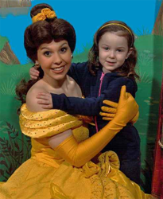

The img element
- Categories:
- Flow content.
- Phrasing content.
- Embedded content.
- Form-associated element.
- If the element has a
usemapattribute: Interactive content. - Palpable content.
- Contexts in which this element can be used:
- Where embedded content is expected.
- Content model:
- Empty.
- Tag omission in text/html:
- No end tag.
- Content attributes:
- Global attributes
alt— Replacement text for use when images are not availablesrc— Address of the resourcesrcset— Images to use in different situations (e.g. high-resolution displays, small monitors, etc)sizescrossorigin— How the element handles crossorigin requestsusemap— Name of image map to useismap— Whether the image is a server-side image mapwidth— Horizontal dimensionheight— Vertical dimension- Allowed ARIA role attribute values:
presentationrole only, for animgelement whosealtattribute's value is empty (alt=""), otherwise any role value.- Allowed ARIA State and Property Attributes:
- Global aria-* attributes
- Any
aria-*attributes applicable to the allowed roles. - DOM interface:
-
[NamedConstructor=Image(optional unsigned long width, optional unsigned long height)] interface HTMLImageElement : HTMLElement { attribute DOMString alt; attribute DOMString src; attribute DOMString srcset; attribute DOMString sizes; attribute DOMString? crossOrigin; attribute DOMString useMap; attribute boolean isMap; attribute unsigned long width; attribute unsigned long height; readonly attribute unsigned long naturalWidth; readonly attribute unsigned long naturalHeight; readonly attribute boolean complete; readonly attribute DOMString currentSrc; // also has obsolete members };
An img element represents an image.
The image given by the src and srcset attributes,
and any previous sibling source elements'
srcset attributes if the parent is a picture element,
is the embedded content; the value of
the alt attribute provides equivalent content for
those who cannot process images or who have image loading disabled (i.e. it is the
img element's fallback content).
The requirements on the alt attribute's value are described
in the next section.
The src attribute must be present, and must contain a
valid non-empty URL potentially surrounded by spaces referencing a non-interactive,
optionally animated, image resource that is neither paged nor scripted.
The srcset attribute may also be present.
If present, its value must consist of one or more
image candidate strings,
each separated from the next by a U+002C COMMA character (,).
If an image candidate string contains no descriptors
and no space characters after the URL,
the following image candidate string, if there is one,
must begin with one or more space characters.
An image candidate string consists of the following components, in order, with the further restrictions described below this list:
Zero or more space characters.
A valid non-empty URL that does not start or end with a U+002C COMMA character (,), referencing a non-interactive, optionally animated, image resource that is neither paged nor scripted.
Zero or more space characters.
-
Zero or one of the following:
A width descriptor, consisting of: a space character, a valid non-negative integer giving a number greater than zero representing the width descriptor value, and a U+0077 LATIN SMALL LETTER W character.
A pixel density descriptor, consisting of: a space character, a valid floating-point number giving a number greater than zero representing the pixel density descriptor value, and a U+0078 LATIN SMALL LETTER X character.
Zero or more space characters.
There must not be an image candidate string for an element that has the same width descriptor value as another image candidate string's width descriptor value for the same element.
There must not be an image candidate string for an element that
has the same pixel density descriptor value as another
image candidate string's pixel density descriptor value for the same element.
For the purpose of this requirement,
an image candidate string with no descriptors is equivalent to
an image candidate string with a 1x descriptor.
If a source element has a sizes attribute present
or an img element has a sizes attribute present,
all image candidate strings for that
element must have the width descriptor specified.
If an image candidate string for an source or img element
has the width descriptor specified,
all other image candidate strings for that element
must also have the width descriptor specified.
The specified width in an image candidate string's width descriptor must match the intrinsic width in the resource given by the image candidate string's URL, if it has an intrinsic width.
The requirements above imply that images can be static bitmaps (e.g. PNGs, GIFs, JPEGs), single-page vector documents (single-page PDFs, XML files with an SVG root element), animated bitmaps (APNGs, animated GIFs), animated vector graphics (XML files with an SVG root element that use declarative SMIL animation), and so forth. However, these definitions preclude SVG files with script, multipage PDF files, interactive MNG files, HTML documents, plain text documents, and so forth. [[!PNG]] [[GIF]] [[!JPEG]] [[PDF]] [[!XML]] [[APNG]] [[!SVG]] [[!MNG]]
If the srcset attribute is present and has any
image candidate strings using a width descriptor,
the sizes attribute must also be present,
and the value must be a valid source size list.
A valid source size list is a string that matches the following grammar: [[!CSSVALUES]] [[!MQ]]
<source-size-list> = [ <source-size># , ]? <source-size-value> <source-size> = <media-condition> <source-size-value> <source-size-value> = <length>
A <source-size-value> must not be negative.
Percentages are not allowed in a <source-size-value>,
to avoid confusion about what it would be relative to.
The vw unit can be used for sizes relative to the viewport width.
The img element must not be used as a layout tool. In particular, img
elements should not be used to display transparent images, as such images rarely convey meaning and
rarely add anything useful to the document.
The crossorigin attribute is a CORS
settings attribute. Its purpose is to allow images from third-party sites that allow
cross-origin access to be used with canvas.
An img element has a current request and a pending request.
The current request is initially set to a new image request.
The pending request is initially set to null.
The current request is usually referred to as the img element itself.
An image request has a state, current URL and image data.
An image request's state is one of the following:
- Unavailable
- The user agent hasn't obtained any image data, or has obtained some or all of the image data but hasn't yet decoded enough of the image to get the image dimensions.
- Partially available
- The user agent has obtained some of the image data and at least the image dimensions are available.
- Completely available
- The user agent has obtained all of the image data and at least the image dimensions are available.
- Broken
- The user agent has obtained all of the image data that it can, but it cannot even decode the image enough to get the image dimensions (e.g. the image is corrupted, or the format is not supported, or no data could be obtained).
An image request's current URL is initially the empty string.
An image request's image data is the decoded image data.
When an image request is either in the partially available state or in the completely available state, it is said to be available.
An image request is initially unavailable.
When an img element is available,
it provides a paint source
whose width is the image's density-corrected intrinsic width (if any),
whose height is the image's density-corrected intrinsic height (if any),
and whose appearance is the intrinsic appearance of the image.
In a browsing context where scripting is disabled, user agents may obtain images immediately or on demand. In a browsing context where scripting is enabled, user agents must obtain images immediately.
A user agent that obtains images immediately must synchronously
update the image data of an img element,
with the restart animation flag set if so stated,
whenever that element is created or has experienced relevant mutations.
A user agent that obtains images on demand must update the image data of an
img element whenever it needs the image data (i.e. on demand),
but only if the img element is in the
unavailable state. When an img element
has experienced relevant mutations, if the user
agent only obtains images on demand, the img element must return to the unavailable state.
The relevant mutations for an img element are as follows:
The element's
src,srcsetorsizesattributes are set, changed, or removed.The element's
srcattribute is set to the same value as the previous value. This must set the restart animation flag for the update the image data algorithm.The element's
crossoriginattribute's state is changed.The element is inserted into or removed from a
pictureparent element.The element's parent is a
pictureelement and asourceelement is inserted as a previous sibling.The element's parent is a
pictureelement and asourceelement that was a previous sibling is removed.The element's parent is a
pictureelement and asourceelement that is a previous sibling has itssrcset,sizes,mediaortypeattributes set, changed, or removed.The element's adopting steps are run.
Each img element has a last selected source, which must initially be
null.
Each image request has a current pixel density, which must initially be undefined.
When an img element has a current pixel density that is not 1.0, the
element's image data must be treated as if its resolution, in device pixels per CSS pixels, was
the current pixel density.
The image's density-corrected intrinsic width and height are the intrinsic width and height
after taking into account the current pixel density.
For example, if the current pixel density is 3.125, that means that there are 300 device pixels per CSS inch, and thus if the image data is 300x600, it has an intrinsic dimension of 96 CSS pixels by 192 CSS pixels.
Each Document object must have a list of available images. Each image
in this list is identified by a tuple consisting of an absolute URL, a CORS
settings attribute mode, and, if the mode is not No
CORS, an origin.
Each image furthermore has an ignore higher-layer caching flag.
User agents may copy entries from one Document
object's list of available images to another at any time (e.g. when the
Document is created, user agents can add to it all the images that are loaded in
other Documents), but must not change the keys of entries copied in this way when
doing so, and must unset the ignore higher-layer caching flag for the copied entry.
User agents may also remove images from such lists at any time (e.g. to save
memory).
User agents must remove entries in the list of available images as appropriate
given higher-layer caching semantics for the resource (e.g. the HTTP Cache-Control
response header) when the ignore higher-layer caching is unset.
The list of available images is intended to enable synchronous switching
when changing the src attribute to a URL that has previously been loaded,
and to avoid re-downloading images in the same document even when they don't allow caching per HTTP.
It is not used to avoid re-downloading the same image while the previous image is still loading,
but the fetch algorithm allows the download to be reused in that case.
The user agent can also store the image data separately from the list of available images.
For example, if a resource has the HTTP response header Cache-Control: must-revalidate,
the user agent would remove it from the list of available images but could keep the image data separately,
and use that if the server responds with a 304 Not Modified status.
When the user agent is to update the image data of an img element,
optionally with the restart animations flag set,
it must run the following steps:
-
If the element's node document is not the active document, then run these substeps:
Continue running this algorithm in parallel.
Wait until the element's node document is the active document.
If another instance of this algorithm for this
imgelement was started after this instance (even if it aborted and is no longer running), then abort these steps.Queue a microtask to continue this algorithm.
If the user agent cannot support images, or its support for images has been disabled, then abort the image request for the current request and the pending request, set current request to the unavailable state, let pending request be null, and abort these steps.
-
If the element does not have a
srcsetattribute specified and it does not have a parent or it has a parent but it is not apictureelement, and it has asrcattribute specified and its value is not the empty string, let selected source be the value of the element'ssrcattribute, and selected pixel density be 1.0. Otherwise, let selected source be null and selected pixel density be undefined. Let the
imgelement's last selected source be selected source.-
If selected source is not null, run these substeps:
Resolve selected source, relative to the element, and let the result be absolute URL. If that is not successful, then abort these inner set of steps.
Let key be a tuple consisting of the resulting absolute URL, the
imgelement'scrossoriginattribute's mode, and, if that mode is not No CORS, the node document's origin.If the list of available images contains an entry for key, then set the ignore higher-layer caching flag for that entry, abort the image request for the current request and the pending request, let pending request be null, let current request be a new image request whose image data is that of the entry and whose state is set to the completely available state, update the presentation of the image appropriately, let the current request's current pixel density be selected pixel density, queue a task to restart the animation if restart animation is set, change current request's current URL to absolute URL, and then fire a simple event named
loadat theimgelement, and abort these steps.
Await a stable state, allowing the task that invoked this algorithm to continue. The synchronous section consists of all the remaining steps of this algorithm until the algorithm says the synchronous section has ended. (Steps in synchronous sections are marked with ⌛.)
-
⌛ If another instance of this algorithm for this
imgelement was started after this instance (even if it aborted and is no longer running), then abort these steps.Only the last instance takes effect, to avoid multiple requests when, for example, the
src,srcset, andcrossoriginattributes are all set in succession. -
⌛ Let selected source and selected pixel density be the URL and pixel density that results from selecting an image source, respectively.
-
⌛ If selected source is null, run these substeps:
⌛ Set the current request to the broken state, abort the image request for the current request and the pending request, and let pending request be null.
⌛ Queue a task to change the current request's current URL to the empty string, and then, if the element has a
srcattribute or asrcsetattribute or a parent that is apictureelement, fire a simple event namederrorat theimgelement.⌛ Abort this algorithm.
-
⌛ Queue a task to fire a progress event named
loadstartat theimgelement. ⌛ Resolve selected source, relative to the element, and let the result be absolute URL. If that is not successful, then abort the image request for the current request and the pending request, set the current request to the broken state, let pending request be null, queue a task to change the current request's current URL to absolute URL, fire a simple event named
errorat theimgelement and then fire a simple event namedloadendat theimgelement, and abort these steps.-
⌛ If the pending request is not null, and absolute URL is the same as the pending request's current URL, then abort these steps.
⌛ If absolute URL is the same as the current request's current URL, and current request is in the partially available state, then abort the image request for the pending request, queue a task to restart the animation if restart animation is set, and abort these steps.
⌛ If the pending request is not null, abort the image request for the pending request.
⌛ Let image request be a new image request whose current URL is absolute URL.
⌛ If current request is in the unavailable state or the broken state, let the current request be image request. Otherwise, let the pending request be image request.
⌛ Do a potentially CORS-enabled fetch of absolute URL, with the mode being the current state of the element's
crossorigincontent attribute, the origin being the origin of theimgelement's node document, and the default origin behaviour set to taint. Let this instance of the fetching algorithm be associated with image request.If the element has a
srcsetattribute or a parent that is apictureelement, the fetching request's context must be set to imageset. Otherwise it must be set to image. [[!FETCH]]This specification does not yet use the "fetch" algorithm from the WHATWG Fetch specification. It will be updated to do so in due course.
The resource obtained in this fashion, if any, is image request's image data. It can be either CORS-same-origin or CORS-cross-origin; this affects the origin of the image itself (e.g. when used on a
canvas).Fetching the image must delay the load event of the element's node document until the task that is queued by the networking task source once the resource has been fetched (defined below) has been run.
This, unfortunately, can be used to perform a rudimentary port scan of the user's local network (especially in conjunction with scripting, though scripting isn't actually necessary to carry out such an attack). User agents may implement cross-origin access control policies that are stricter than those described above to mitigate this attack, but unfortunately such policies are typically not compatible with existing Web content.
If the resource is CORS-same-origin, each task that is queued by the networking task source while the image is being fetched, if image request is the current request, must fire a progress event named
progressat theimgelement. End the synchronous section, continuing the remaining steps in parallel, but without missing any data from the fetch algorithm.
-
As soon as possible, jump to the first applicable entry from the following list:
- If the resource type is
multipart/x-mixed-replace -
The next task that is queued by the networking task source while the image is being fetched must run the following steps:
-
If image request is the pending request and at least one body part has been completely decoded, abort the image request for the current request, upgrade the pending request to the current request.
-
Otherwise, if image request is the pending request and the user agent is able to determine that image request's image is corrupted in some fatal way such that the image dimensions cannot be obtained, abort the image request for the current request, upgrade the pending request to the current request and set the current request's state to broken.
-
Otherwise, if image request is the current request, it is in the unavailable state, and the user agent is able to determine image request's image's width and height, set the current request's state to partially available.
-
Otherwise, if image request is the current request, it is in the unavailable state, and the user agent is able to determine that image request's image is corrupted in some fatal way such that the image dimensions cannot be obtained, set the current request's state to broken.
Each task that is queued by the networking task source while the image is being fetched must update the presentation of the image, but as each new body part comes in, it must replace the previous image. Once one body part has been completely decoded, the user agent must set the
imgelement to the completely available state and queue a task to fire a simple event namedloadat theimgelement.The
progressandloadendevents are not fired formultipart/x-mixed-replaceimage streams. -
- If the resource type and data corresponds to a supported image format, as described below
-
The next task that is queued by the networking task source while the image is being fetched must run the following steps:
-
If the user agent is able to determine image request's image's width and height, and image request is pending request, set image request's state to partially available.
-
Otherwise, if the user agent is able to determine image request's image's width and height, and image request is current request, update the
imgelement's presentation appropriately and set image request's state to partially available. -
Otherwise, if the user agent is able to determine that image request's image is corrupted in some fatal way such that the image dimensions cannot be obtained, and image request is pending request, abort the image request for the current request and the pending request, upgrade the pending request to the current request, set current request to the broken state, fire a simple event named
errorat theimgelement, fire a simple event namedloadendat theimgelement, and abort these steps. -
Otherwise, if the user agent is able to determine that image request's image is corrupted in some fatal way such that the image dimensions cannot be obtained, and image request is current request, abort the image request for image request, fire a simple event named
errorat theimgelement, fire a simple event namedloadendat theimgelement, and abort these steps.
That task, and each subsequent task, that is queued by the networking task source while the image is being fetched, if image request is the current request, must update the presentation of the image appropriately (e.g. if the image is a progressive JPEG, each packet can improve the resolution of the image).
Furthermore, the last task that is queued by the networking task source once the resource has been fetched must additionally run these steps:
If image request is the pending request, abort the image request for the current request, upgrade the pending request to the current request and update the
imgelement's presentation appropriately.Set image request to the completely available state.
Add the image to the list of available images using the key key, with the ignore higher-layer caching flag set.
Fire a progress event or simple event named
loadat theimgelement, depending on the resource in image request.Fire a progress event or simple event named
loadendat theimgelement, depending on the resource in image request.
-
- Otherwise
-
The image data is not in a supported file format; the user agent must set image request to the broken state, abort the image request for the current request and the pending request, upgrade the pending request to the current request if image request is the pending request, and then queue a task to first fire a simple event named
errorat theimgelement and then fire a simple event namedloadendat theimgelement.
- If the resource type is
To abort the image request for an image request image request means to run the following steps:
Forget image request's image data, if any.
Abort any instance of the fetching algorithm for image request, discarding any pending tasks generated by that algorithm.
To upgrade the pending request to the current request for an img element means to run the following steps:
Let the
imgelement's current request be the pending request.Let the
imgelement's pending request be null.
To fire a progress event or simple event named type at an element e, depending on resource r, means to fire a progress event named type at e if r is CORS-same-origin, and otherwise fire a simple event named type at e.
While a user agent is running the above algorithm for an element x, there
must be a strong reference from the element's node document to the element x,
even if that element is not in its Document.
When an img element is in the completely available
state and the user agent can decode the media data without errors, then the
img element is said to be fully decodable.
Whether the image is fetched successfully or not (e.g. whether the response code was a 2xx code or equivalent) must be ignored when determining the image's type and whether it is a valid image.
This allows servers to return images with error responses, and have them displayed.
The user agent should apply the image sniffing rules to determine the type of the image, with the image's associated Content-Type headers giving the official type. If these rules are not applied, then the type of the image must be the type given by the image's associated Content-Type headers.
User agents must not support non-image resources with the img element (e.g. XML
files whose root element is an HTML element). User agents must not run executable code (e.g.
scripts) embedded in the image resource. User agents must only display the first page of a
multipage resource (e.g. a PDF file). User agents must not allow the resource to act in an
interactive fashion, but should honour any animation in the resource.
This specification does not specify which image types are to be supported.
An img element is associated with a source set.
A source set is an ordered set of zero or more image sources and a source size.
An image source is a URL, and optionally either a density descriptor, or a width descriptor.
A source size is a <source-size-value>.
When a source size has a unit relative to the viewport,
it must be interpreted relative to the img element's node document's viewport.
Other units must be interpreted the same as in Media Queries. [[!MQ]]
A source size must not use CSS functions other than the calc() function.
When asked to select an image source for a given img element el,
user agents must do the following:
Update the source set for el.
If el's source set is empty, return null as the URL and undefined as the pixel density and abort these steps.
Otherwise, take el's source set and let it be source set.
If an entry b in source set has the same associated density descriptor as an earlier entry a in source set, then remove entry b. Repeat this step until none of the entries in source set have the same associated density descriptor as an earlier entry.
In a user agent-specific manner, choose one image source from source set. Let this be selected source.
Return selected source and its associated pixel density.
When asked to update the source set for a given img element el,
user agents must do the following:
Set el's source set to an empty source set.
If el has a parent node and that is a
pictureelement, let elements be an array containing el's parent node's child elements, retaining relative order. Otherwise, let elements be array containing only el.-
Iterate through elements, doing the following for each item child:
-
If child is el:
If child has a
srcsetattribute, parse child's srcset attribute and let the returned source set be source set. Otherwise, let source set be an empty source set.Parse child's sizes attribute and let source set's source size be the returned value.
If child has a
srcattribute whose value is not the empty string and source set does not contain an image source with a density descriptor value of 1, and no image source with a width descriptor, append child'ssrcattribute value to source set.Normalise the source densities of source set.
Let el's source set be source set.
Abort this algorithm.
If child is not a
sourceelement, continue to the next child. Otherwise, child is asourceelement.If child does not have a
srcsetattribute, continue to the next child.Parse child's srcset attribute and let the returned source set be source set.
If source set has zero image sources, continue to the next child.
If child has a
mediaattribute, and its value does not match the environment, continue to the next child.Parse child's sizes attribute and let source set's source size be the returned value.
If child has a
typeattribute, and its value is an unknown or unsupported MIME type, continue to the next child.Normalise the source densities of source set.
Let el's source set be source set.
Abort this algorithm.
-
Each img element independently considers
its previous sibling source elements
plus the img element itself
for selecting an image source, ignoring any other (invalid) elements,
including other img elements in the same picture element,
or source elements that are following siblings
of the relevant img element.
When asked to parse a srcset attribute from an element,
parse the value of the element's srcset attribute as follows:
Let input be the value passed to this algorithm.
Let position be a pointer into input, initially pointing at the start of the string.
Let candidates be an initially empty source set.
Splitting loop: Collect a sequence of characters that are space characters or U+002C COMMA characters. If any U+002C COMMA characters were collected, that is a parse error.
If position is past the end of input, return candidates and abort these steps.
Collect a sequence of characters that are not space characters, and let that be url.
Let descriptors be a new empty list.
-
If url ends with a U+002C COMMA character (,), follow these substeps:
Remove all trailing U+002C COMMA characters from url. If this removed more than one character, that is a parse error.
Otherwise, follow these substeps:
Descriptor tokeniser: Skip whitespace
Let current descriptor be the empty string.
Let state be in descriptor.
-
Let c be the character at position. Do the following depending on the value of state. For the purpose of this step, "EOF" is a special character representing that position is past the end of input.
- In descriptor
-
Do the following, depending on the value of c:
- Space character
If current descriptor is not empty, append current descriptor to descriptors and let current descriptor be the empty string. Set state to after descriptor.
- U+002C COMMA (,)
Advance position to the next character in input. If current descriptor is not empty, append current descriptor to descriptors. Jump to the step labeled descriptor parser.
- U+0028 LEFT PARENTHESIS (()
Append c to current descriptor. Set state to in parens.
- EOF
If current descriptor is not empty, append current descriptor to descriptors. Jump to the step labeled descriptor parser.
- Anything else
Append c to current descriptor.
- In parens
-
Do the following, depending on the value of c:
- U+0029 RIGHT PARENTHESIS ())
Append c to current descriptor. Set state to in descriptor.
- EOF
Append current descriptor to descriptors. Jump to the step labeled descriptor parser.
- Anything else
Append c to current descriptor.
- After descriptor
-
Do the following, depending on the value of c:
- Space character
Stay in this state.
- EOF
Jump to the step labeled descriptor parser.
- Anything else
Set state to in descriptor. Set position to the previous character in input.
Advance position to the next character in input. Repeat this substep.
In order to be compatible with future additions, this algorithm supports multiple descriptors and descriptors with parens.
Descriptor parser: Let error be no.
Let width be absent.
Let density be absent.
Let future-compat-h be absent.
-
For each descriptor in descriptors, run the appropriate set of steps from the following list:
- If the descriptor consists of a valid non-negative integer followed by a U+0077 LATIN SMALL LETTER W character
-
-
If the user agent does not support the
sizesattribute, let error be yes.A conforming user agent will support the
sizesattribute. However, user agents typically implement and ship features in an incremental manner in practice. If width and density are not both absent, then let error be yes.
Apply the rules for parsing non-negative integers to the descriptor. If the result is zero, let error be yes. Otherwise, let width be the result.
-
- If the descriptor consists of a valid floating-point number followed by a U+0078 LATIN SMALL LETTER X character
-
If width, density and future-compat-h are not all absent, then let error be yes.
-
Apply the rules for parsing floating-point number values to the descriptor. If the result is less than zero, let error be yes. Otherwise, let density be the result.
If density is zero, the intrinsic dimensions will be infinite. User agents are expected to have limits in how big images can be rendered, which is allowed by the hardware limitations clause.
- If the descriptor consists of a valid non-negative integer followed by a U+0068 LATIN SMALL LETTER H character
-
This is a parse error.
If future-compat-h and density are not both absent, then let error be yes.
Apply the rules for parsing non-negative integers to the descriptor. If the result is zero, let error be yes. Otherwise, let future-compat-h be the result.
- Anything else
Let error be yes.
If future-compat-h is not absent and width is absent, let error be yes.
If error is still no, then append a new image source to candidates whose URL is url, associated with a width width if not absent and a pixel density density if not absent. Otherwise, there is a parse error.
Return to the step labeled splitting loop.
When asked to parse a sizes attribute from an element,
parse a comma-separated list of component values
from the value of the element's sizes attribute
(or the empty string, if the attribute is absent),
and let unparsed sizes list be the result. [[!CSSSYNTAX]]
For each unparsed size in unparsed sizes list:
Remove all consecutive <whitespace-token>s from the end of unparsed size. If unparsed size is now empty, that is a parse error; continue to the next iteration of this algorithm.
If the last component value in unparsed size is a valid non-negative <source-size-value>, let size be its value and remove the component value from unparsed size. Any CSS function other than the
calc()function is invalid. Otherwise, there is a parse error; continue to the next iteration of this algorithm.Remove all consecutive <whitespace-token>s from the end of unparsed size. If unparsed size is now empty, return size and exit this algorithm. If this was not the last item in unparsed sizes list, that is a parse error.
Parse the remaining component values in unparsed size as a <media-condition>. If it does not parse correctly, or it does parse correctly but the <media-condition> evaluates to false, continue to the next iteration of this algorithm. [[!MQ]]
Return size and exit this algorithm.
If the above algorithm exhausts unparsed sizes list without returning a size value,
return 100vw.
A parse error for the algorithms above indicates a non-fatal mismatch between input and requirements. User agents are encouraged to expose parse errors somehow.
While a valid source size list only contains a bare <source-size-value> (without an accompanying <media-condition>) as the last entry in the <source-size-list>, the parsing algorithm technically allows such at any point in the list, and will accept it immediately as the size if the preceding entries in the list weren't used. This is to enable future extensions, and protect against simple author errors such as a final trailing comma.
An image source can have a density descriptor, a width descriptor, or no descriptor at all accompanying its URL. Normalising a source set gives every image source a density descriptor.
When asked to normalise the source densities of a source set source set, the user agent must do the following:
Let source size be source set's source size.
-
For each image source in source set:
If the image source has a density descriptor, continue to the next image source.
-
Otherwise, if the image source has a width descriptor, replace the width descriptor with a density descriptor with a value of the width descriptor divided by the source size and a unit of
x.If the source size is zero, the density would be infinity, which results in the intrinsic dimensions being zero by zero.
Otherwise, give the image source a density descriptor of
1x.
The user agent may at any time run the following algorithm to update an img
element's image in order to react to changes in the environment. (User agents are not
required to ever run this algorithm; for example, if the user is not looking at the page any
more, the user agent might want to wait until the user has returned to the page before determining
which image to use, in case the environment changes again in the meantime.)
User agents are encouraged to run this algorithm in particular when the user changes the viewport's size
(e.g. by resizing the window or changing the page zoom),
and when an img element is inserted into a document,
so that the density-corrected intrinsic width and height match the new viewport,
and so that the correct image is chosen when art direction is involved.
Await a stable state. The synchronous section consists of all the remaining steps of this algorithm until the algorithm says the synchronous section has ended. (Steps in synchronous sections are marked with ⌛.)
⌛ If the
imgelement does not have asrcsetattribute specified and it either has no parent or it is not apictureelement, it is not in aDocument, has image data whose resource type ismultipart/x-mixed-replace, or the pending request is not null, then abort this algorithm.⌛ Let selected source and selected pixel density be the URL and pixel density that results from selecting an image source, respectively.
⌛ If selected source is null, then abort these steps.
⌛ If selected source and selected pixel density are the same as the element's last selected source and current pixel density, then abort these steps.
⌛ Resolve selected source, relative to the element, and let the result be absolute URL. If that is not successful, abort these steps.
⌛ Let CORS mode be the state of the element's
crossorigincontent attribute.⌛ Let origin be the origin of the
imgelement's node document.⌛ Let key be a tuple consisting of absolute URL, CORS mode, and, if CORS mode is not No CORS, origin.
⌛ Let image request be a new image request whose current URL is absolute URL
⌛ Let the element's pending request be image request.
End the synchronous section, continuing the remaining steps in parallel.
-
If the list of available images contains an entry for key, then set image request's image data to that of the entry. Continue to the next step.
Otherwise, do a potentially CORS-enabled fetch of absolute URL, with the mode being CORS mode, the origin being origin, and the default origin behaviour set to taint.
If this download fails in any way (other than the response code not being a 2xx code, as mentioned earlier), or if the image format is unsupported (as determined by applying the image sniffing rules, again as mentioned earlier), or if the user agent is able to determine that image request's image is corrupted in some fatal way such that the image dimensions cannot be obtained, or if the resource type is
multipart/x-mixed-replace, then let pending request be null and abort these steps.Otherwise, wait for the fetch algorithm to queue its last task, and then continue with these steps. The resource obtained in this fashion, if any, is image request's image data. It can be either CORS-same-origin or CORS-cross-origin; this affects the origin of the image itself (e.g. when used on a
canvas). -
Queue a task to run the following substeps:
If the
imgelement has experienced relevant mutations since this algorithm started, then let pending request be null and abort these steps.Let the
imgelement's last selected source be selected source and theimgelement's current pixel density be selected pixel density.Set image request to the completely available state.
Add the image to the list of available images using the key key, with the ignore higher-layer caching flag set.
Update the
imgelement's presentation appropriately.Fire a simple event named
loadat theimgelement.
The task source for the tasks queued by algorithms in this section is the DOM manipulation task source.
What an img element represents depends on the src attribute and the alt
attribute.
- If the
srcattribute is set and thealtattribute is set to the empty string -
The image is either decorative or supplemental to the rest of the content, redundant with some other information in the document.
If the image is available and the user agent is configured to display that image, then the element represents the element's image data.
Otherwise, the element represents nothing, and may be omitted completely from the rendering. User agents may provide the user with a notification that an image is present but has been omitted from the rendering.
- If the
srcattribute is set and thealtattribute is set to a value that isn't empty -
The image is a key part of the content; the
altattribute gives a textual equivalent or replacement for the image.If the image is available and the user agent is configured to display that image, then the element represents the element's image data.
Otherwise, the element represents the text given by the
altattribute. User agents may provide the user with a notification that an image is present but has been omitted from the rendering. - If the
srcattribute is set and thealtattribute is not -
The image might be a key part of the content, and there is no textual equivalent of the image available.
In a conforming document, the absence of the
altattribute indicates that the image is a key part of the content but that a textual replacement for the image was not available when the image was generated.If the image is available and the user agent is configured to display that image, then the element represents the element's image data.
Otherwise, the user agent should display some sort of indicator that there is an image that is not being rendered, and may, if requested by the user, or if so configured, or when required to provide contextual information in response to navigation, provide caption information for the image, derived as follows:
If the image has a
titleattribute whose value is not the empty string, then the value of that attribute is the caption information; abort these steps.If the image is a descendant of a
figureelement that has a childfigcaptionelement, and, ignoring thefigcaptionelement and its descendants, thefigureelement has no flow content descendants other than inter-element whitespace and theimgelement, then the contents of the first suchfigcaptionelement are the caption information; abort these steps.There is no caption information.
- If the
srcattribute is not set and either thealtattribute is set to the empty string or thealtattribute is not set at all -
The element represents nothing.
- Otherwise
-
The element represents the text given by the
altattribute.
The alt attribute does not represent advisory information.
User agents must not present the contents of the alt attribute
in the same way as content of the title attribute.
User agents may always provide the user with the option to display any image, or to prevent any image from being displayed. User agents may also apply heuristics to help the user make use of the image when the user is unable to see it, e.g. due to a visual disability or because they are using a text terminal with no graphics capabilities. Such heuristics could include, for instance, optical character recognition (OCR) of text found within the image.
While user agents are encouraged to repair cases of missing alt attributes, authors must not rely on such behaviour. Requirements for providing text to act as an alternative for images are described
in detail below.
The contents of img elements, if any, are ignored for the purposes of
rendering.
The usemap attribute,
if present, can indicate that the image has an associated
image map.
The ismap
attribute, when used on an element that is a descendant of an
a element with an href attribute, indicates by its
presence that the element provides access to a server-side image
map. This affects how events are handled on the corresponding
a element.
The ismap attribute is a
boolean attribute. The attribute must not be specified
on an element that does not have an ancestor a element
with an href attribute.
The usemap and
ismap attributes
can result in confusing behaviour when used together with
source elements with the
media attribute specified
in a picture element.
The img element supports dimension
attributes.
The alt, src, srcset and sizes IDL attributes must reflect the
respective content attributes of the same name.
The crossOrigin IDL attribute must
reflect the crossorigin content attribute.
The useMap IDL attribute must
reflect the usemap content attribute.
The isMap IDL attribute must reflect
the ismap content attribute.
- image .
width[ = value ] - image .
height[ = value ] -
These attributes return the actual rendered dimensions of the image, or zero if the dimensions are not known.
They can be set, to change the corresponding content attributes.
- image .
naturalWidth - image .
naturalHeight -
These attributes return the intrinsic dimensions of the image, or zero if the dimensions are not known.
- image .
complete -
Returns true if the image has been completely downloaded or if no image is specified; otherwise, returns false.
- image .
currentSrc -
Returns the image's absolute URL.
- image = new
Image( [ width [, height ] ] ) -
Returns a new
imgelement, with thewidthandheightattributes set to the values passed in the relevant arguments, if applicable.
The IDL attributes width and height must return the rendered width and height of the
image, in CSS pixels, if the image is being rendered, and is being rendered to a
visual medium; or else the density-corrected intrinsic width and height of the image, in CSS pixels, if the image has intrinsic dimensions and is
available but not being rendered to a visual medium; or else 0, if
the image is not available or does not have intrinsic dimensions. [[!CSS]]
On setting, they must act as if they reflected the respective content attributes of the same name.
The IDL attributes naturalWidth and
naturalHeight must return
the densty-corrected intrinsic width and height
of the image, in CSS pixels, if the image has intrinsic dimensions and is available,
or else 0. [[!CSS]]
The IDL attribute complete must return true if
any of the following conditions is true:
- Both the
srcattribute and thesrcsetattribute are omitted. - The
srcsetattribute is omitted and thesrcattribute's value is the empty string. - The final task that is queued by the networking task source once the resource has been fetched has been queued.
- The
imgelement is completely available. - The
imgelement is broken.
Otherwise, the attribute must return false.
The value of complete can thus change while
a script is executing.
The currentSrc IDL attribute
must return the img element's current request's current URL.
A constructor is provided for creating HTMLImageElement objects (in addition to
the factory methods from DOM such as createElement()): Image(width, height).
When invoked as a constructor, this must return a new HTMLImageElement object (a new
img element). If the width argument is present, the new object's
width content attribute must be set to width. If the height argument is also present, the new object's
height content attribute must be set to height.
The element's node document must be the active document of the
browsing context of the Window object on which the interface object of
the invoked constructor is found.
A single image can have different appropriate alternative text depending on the context.
In each of the following cases, the same image is used, yet the alt text is different each time. The image is the coat of arms of the
Carouge municipality in the canton Geneva in Switzerland.
Here it is used as a supplementary icon:
<p>I lived in <img src="carouge.svg" alt=""> Carouge.</p>
Here it is used as an icon representing the town:
<p>Home town: <img src="carouge.svg" alt="Carouge"></p>
Here it is used as part of a text on the town:
<p>Carouge has a coat of arms.</p> <p><img src="carouge.svg" alt="The coat of arms depicts a lion, sitting in front of a tree."></p> <p>It is used as decoration all over the town.</p>
Here it is used as a way to support a similar text where the description is given as well as, instead of as an alternative to, the image:
<p>Carouge has a coat of arms.</p> <p><img src="carouge.svg" alt=""></p> <p>The coat of arms depicts a lion, sitting in front of a tree. It is used as decoration all over the town.</p>
Here it is used as part of a story:
<p>He picked up the folder and a piece of paper fell out.</p> <p><img src="carouge.svg" alt="Shaped like a shield, the paper had a red background, a green tree, and a yellow lion with its tongue hanging out and whose tail was shaped like an S."></p> <p>He stared at the folder. S! The answer he had been looking for all this time was simply the letter S! How had he not seen that before? It all came together now. The phone call where Hector had referred to a lion's tail, the time Marco had stuck his tongue out...</p>
Here it is not known at the time of publication what the image will be, only that it will be a
coat of arms of some kind, and thus no replacement text can be provided, and instead only a brief
caption for the image is provided, in the title attribute:
<p>The last user to have uploaded a coat of arms uploaded this one:</p> <p><img src="last-uploaded-coat-of-arms.cgi" title="User-uploaded coat of arms."></p>
Ideally, the author would find a way to provide real replacement text even in this case, e.g. by asking the previous user. Not providing replacement text makes the document more difficult to use for people who are unable to view images, e.g. blind users, or users or very low-bandwidth connections or who pay by the byte, or users who are forced to use a text-only Web browser.
Here are some more examples showing the same picture used in different contexts, with different appropriate alternate texts each time.
<article> <h1>My cats</h1> <h2>Fluffy</h2> <p>Fluffy is my favourite.</p> <img src="fluffy.jpg" alt="She likes playing with a ball of yarn."> <p>She's just too cute.</p> <h2>Miles</h2> <p>My other cat, Miles just eats and sleeps.</p> </article>
<article> <h1>Photography</h1> <h2>Shooting moving targets indoors</h2> <p>The trick here is to know how to anticipate; to know at what speed and what distance the subject will pass by.</p> <img src="fluffy.jpg" alt="A cat flying by, chasing a ball of yarn, can be photographed quite nicely using this technique."> <h2>Nature by night</h2> <p>To achieve this, you'll need either an extremely sensitive film, or immense flash lights.</p> </article>
<article> <h1>About me</h1> <h2>My pets</h2> <p>I've got a cat named Fluffy and a dog named Miles.</p> <img src="fluffy.jpg" alt="Fluffy, my cat, tends to keep itself busy."> <p>My dog Miles and I like go on long walks together.</p> <h2>music</h2> <p>After our walks, having emptied my mind, I like listening to Bach.</p> </article>
<article> <h1>Fluffy and the Yarn</h1> <p>Fluffy was a cat who liked to play with yarn. He also liked to jump.</p> <aside><img src="fluffy.jpg" alt="" title="Fluffy"></aside> <p>He would play in the morning, he would play in the evening.</p> </article>
Requirements for providing text to act as an alternative for images
Text alternatives, [[WCAG]] are a primary way of making visual information accessible, because they can be rendered through any sensory modality (for example, visual, auditory or tactile) to match the needs of the user. Providing text alternatives allows the information to be rendered in a variety of ways by a variety of user agents. For example, a person who cannot see a picture can have the text alternative read aloud using synthesized speech.
The alt attribute on images is a very important accessibility attribute.
Authoring useful alt attribute content requires the author to carefully consider the context in
which the image appears and the function that image may have in that context. The guidance included
here addresses the most common ways authors use images. Additional guidance and techniques are available in Resources on Alternative Text for Images.
Examples of scenarios where users benefit from text alternatives for images
- They have a very slow connection and are browsing with images disabled.
- They have a vision impairment and use text to speech software.
- They have a cognitive impairment and use text to speech software.
- They are using a text-only browser.
- They are listening to the page being read out by a voice Web browser.
- They have images disabled to save on download costs.
- They have problems loading images or the source of an image is wrong.
General guidelines
Except where otherwise specified, the alt attribute must be specified and its value must not be empty;
the value must be an appropriate functional replacement for the image. The specific requirements for the alt attribute content
depend on the image's function in the page, as described in the following sections.
To determine an appropriate text alternative it is important to think about why an image is being included in a page. What is its purpose? Thinking like this will help you to understand what is important about the image for the intended audience. Every image has a reason for being on a page, because it provides useful information, performs a function, labels an interactive element, enhances aesthetics or is purely decorative. Therefore, knowing what the image is for, makes writing an appropriate text alternative easier.
A link or button containing nothing but an image
When an a element that is a hyperlink, or a button element, has no text content
but contains one or more images, include text in the alt attribute(s) that together convey the purpose of the link or button.
In this example, a portion of an editor interface is displayed. Each button has an icon representing an action a user can take on content they are editing. For users who cannot view the images, the action names are included within the alt attributes of the images:
<ul> <li><button><img src="b.png" alt="Bold"></button></li> <li><button><img src="i.png" alt="Italics"></button></li> <li><button><img src="strike.png" alt="Strike through"></button></li> <li><button><img src="blist.png" alt="Bulleted list"></button></li> <li><button><img src="nlist.png" alt="Numbered list"></button></li> </ul>
In this example, a link contains a logo. The link points to the W3C web site from an external site. The text alternative is a brief description of the link target.

<a href="http://w3.org"> <img src="images/w3c_home.png" width="72" height="48" alt="W3C web site"> </a>
This example is the same as the previous example, except that the link is on the W3C web site. The text alternative is a brief description of the link target.

<a href="http://w3.org"> <img src="images/w3c_home.png" width="72" height="48" alt="W3C home"> </a>
Depending on the context in which an image of a logo is used it could be appropriate to provide an indication, as part of the text alternative, that the image is a logo. Refer to section 4.7.1.1.19 Logos, insignia, flags, or emblems.
In this example, a link contains a print preview icon. The link points to a version of the page with a print stylesheet applied. The text alternative is a brief description of the link target.
<a href="preview.html"> <img src="images/preview.png" width="32" height="30" alt="Print preview."> </a>
In this example, a button contains a search icon. The button submits a search form. The text alternative is a brief description of what the button does.

<button> <img src="images/search.png" width="74" height="29" alt="Search"> </button>
In this example, a company logo for the PIP Corporation has been split into the following two images,
the first containing the word PIP and the second with the abbreviated word CO. The images are the
sole content of a link to the PIPCO home page. In this case a brief description of the link target is provided.
As the images are presented to the user as a single entity the text alternative PIP CO home is in the
alt attribute of the first image.

<a href="pipco-home.html"> <img src="pip.gif" alt="PIP CO home"><img src="co.gif" alt=""> </a>
Graphical Representations: Charts, diagrams, graphs, maps, illustrations
Users can benefit when content is presented in graphical form, for example as a flowchart, a diagram, a graph, or a map showing directions. Users also benefit when content presented in a graphical form is also provided in a textual format, these users include those who are unable to view the image (e.g. because they have a very slow connection, or because they are using a text-only browser, or because they are listening to the page being read out by a hands-free automobile voice Web browser, or because they have a visual impairment and use an assistive technology to render the text to speech).
In the following example we have an image of a pie chart, with text in the alt attribute
representing the data shown in the pie chart:

<img src="piechart.gif" alt="Pie chart: Browser Share - Internet Explorer 25%, Firefox 40%, Chrome 25%, Safari 6% and Opera 4%.">
In the case where an image repeats the previous paragraph in graphical form. The alt attribute content labels the image.
<p>According to a recent study Firefox has a 40% browser share, Internet Explorer has 25%, Chrome has 25%, Safari has 6% and Opera has 4%.</p> <p><img src="piechart.gif" alt="Pie chart representing the data in the previous paragraph."></p>
It can be seen that when the image is not available, for example because the src attribute value is incorrect, the text alternative provides the user with a brief description of the image content:
In cases where the text alternative is lengthy, more than a sentence or two, or would benefit from
the use of structured markup, provide a brief description or label using the alt
attribute, and an associated text alternative.
Here's an example of a flowchart image, with a short text alternative
included in the alt attribute, in this case the text alternative is a description of the link target
as the image is the sole content of a link. The link points to a description, within the same document, of the
process represented in the flowchart.

<a href="#desc"><img src="flowchart.gif" alt="Flowchart: Dealing with a broken lamp."></a> ... ... <div id="desc"> <h2>Dealing with a broken lamp</h2> <ol> <li>Check if it's plugged in, if not, plug it in.</li> <li>If it still doesn't work; check if the bulb is burned out. If it is, replace the bulb.</li> <li>If it still doesn't work; buy a new lamp.</li> </ol> </div>
In this example, there is an image of a chart. It would be inappropriate to provide the information depicted in
the chart as a plain text alternative in an alt attribute as the information is a data set. Instead a
structured text alternative is provided below the image in the form of a data table using the data that is represented
in the chart image.

Indications of the highest and lowest rainfall for each season have been included in the table, so trends easily identified in the chart are also available in the data table.
| United Kingdom | Japan | Australia | |
|---|---|---|---|
| Spring | 5.3 (highest) | 2.4 | 2 (lowest) |
| Summer | 4.5 (highest) | 3.4 | 2 (lowest) |
| Autumn | 3.5 (highest) | 1.8 | 1.5 (lowest) |
| Winter | 1.5 (highest) | 1.2 | 1 (lowest) |
<figure> <figcaption>Rainfall Data</figcaption> <img src="rainchart.gif" alt="Bar chart: Average rainfall in millimetres by Country and Season."> <table> <caption>Rainfall in millimetres by Country and Season.</caption> <tr><td><th scope="col">UK <th scope="col">Japan<th scope="col">Australia</tr> <tr><th scope="row">Spring <td>5.5 (highest)<td>2.4 <td>2 (lowest)</tr> <tr><th scope="row">Summer <td>4.5 (highest)<td>3.4<td>2 (lowest)</tr> <tr><th scope="row">Autumn <td>3.5 (highest) <td>1.8 <td>1.5 (lowest)</tr> <tr><th scope="row">Winter <td>1.5 (highest) <td>1.2 <td>1 lowest</tr> </table> </figure>
The figure element is used to group the Bar Chart image and data table.
The figcaption element provides a caption for the grouped content.
For any of the examples in this section the details and summary
elements could be used so that the text descriptions for the images are only displayed on demand:


<figure> <img src="flowchart.gif" alt="Flowchart: Dealing with a broken lamp."> <details> <summary>Dealing with a broken lamp</summary> <ol> lt;li>Check if it's plugged in, if not, plug it in.</li> <li>If it still doesn't work; check if the bulb is burned out. If it is, replace the bulb.</li> <li>If it still doesn't work; buy a new lamp.</li> </ol> </details> </figure>
The details and summary elements are not currently well supported by browsers, until such times they are supported, if used, you will need to use scripting to provide the functionality. There are a number of scripted Polyfills and scripted custom controls available, in popular JavaScript UI widget libraries, which provide similar functionality.
Images of text
Sometimes, an image only contains text, and the purpose of the image
is to display text using visual effects and /or fonts. It is strongly
recommended that text styled using CSS be used, but if this is not possible, provide
the same text in the alt attribute as is in the image.
This example shows an image of the text "Get Happy!" written in a fancy multi colored freehand style. The image makes up the content of a heading. In this case the text alternative for the image is "Get Happy!".
<h1><img src="gethappy.gif" alt="Get Happy!"></h1>
In this example we have an advertising image consisting of text, the phrase "The BIG sale" is repeated 3 times, each time the text gets smaller and fainter, the last line reads "...ends Friday" In the context of use, as an advertisement, it is recommended that the image's text alternative only include the text "The BIG sale" once as the repetition is for visual effect and the repetition of the text for users who cannot view the image is unnecessary and could be confusing.

<p><img src="sale.gif" alt="The BIG sale ...ends Friday."></p>
In situations where there is also a photo or other graphic along with the image of text, ensure that the words in the image text are included in the text alternative, along with any other description of the image that conveys meaning to users who can view the image, so the information is also available to users who cannot view the image.
When an image is used to represent a character that cannot otherwise be represented in Unicode, for example gaiji, itaiji, or new characters such as novel currency symbols, the text alternative should be a more conventional way of writing the same thing, e.g. using the phonetic hiragana or katakana to give the character's pronunciation.
In this example from 1997, a new-fangled currency symbol that looks like a curly E with two bars in the middle instead of one is represented using an image. The alternative text gives the character's pronunication.
Only 5.99!
<p>Only <img src="euro.png" alt="euro ">5.99!
An image should not be used if Unicode characters would serve an identical purpose. Only when the text cannot be directly represented using Unicode, e.g. because of decorations or because the character is not in the Unicode character set (as in the case of gaiji), would an image be appropriate.
If an author is tempted to use an image because their default system font does not support a given character, then Web Fonts are a better solution than images.
An illuminated manuscript might use graphics for some of its letters. The text alternative in such a situation is just the character that the image represents.
 nce upon a time and a long long time ago...
nce upon a time and a long long time ago...
<p><img src="initials/fancyO.png" alt="O">nce upon a time and a long long time ago...
Images that include text
Sometimes, an image consists of a graphics such as a chart and associated text. In this case it is recommended that the text in the image is included in the text alternative.
Consider an image containing a pie chart and associated text. It is recommended wherever possible to provide any associated text as text, not an image of text. If this is not possible include the text in the text alternative along with the pertinent information conveyed in the image.

<p><img src="figure1.gif" alt="Figure 1. Distribution of Articles by Journal Category. Pie chart: Language=68%, Education=14% and Science=18%."></p>
Here's another example of the same pie chart image,
showing a short text alternative included in the alt attribute
and a longer text alternative in text. The figure and figcaption
elements are used to associate the longer text alternative with the image. The alt attribute is used
to label the image.
<figure> <img src="figure1.gif" alt="Figure 1"> <figcaption><strong>Figure 1.</strong> Distribution of Articles by Journal Category. Pie chart: Language=68%, Education=14% and Science=18%.</figcaption> </figure>
The advantage of this method over the previous example is that the text alternative
is available to all users at all times. It also allows structured mark up to be used in the text
alternative, where as a text alternative provided using the alt attribute does not.
Images that enhance the themes or subject matter of the page content
An image that isn't discussed directly by the surrounding text but still has
some relevance can be included in a page using the img element. Such images
are more than mere decoration, they may augment the themes or subject matter of the page
content and so still form part of the content. In these cases, it is recommeneded that a
text alternative be provided.
Here is an example of an image closely related to the subject matter of the page content
but not directly discussed. An image of a painting inspired by a poem, on a page reciting that poem.
The following snippet shows an example. The image is a painting titled the "Lady of Shallot", it is
inspired by the poem and its subject matter is derived from the poem. Therefore it is strongly
recommended that a text alternative is provided. There is a short description of the content of
the image in the alt attribute and
a link below the image to a longer description located at the bottom of the document. At the end
of the longer description there is also a link to further information about the painting.

<header> <h1>The Lady of Shalott</h1> <p>A poem by Alfred Lord Tennyson</p> </header> <img src="shalott.jpeg" alt="Painting of a young woman with long hair, sitting in a wooden boat. "> <p><a href="#des">Description of the painting</a>.</p> <!-- Full Recitation of Alfred, Lord Tennyson's Poem. --> ... ... ... <p id="des">The woman in the painting is wearing a flowing white dress. A large piece of intricately patterned fabric is draped over the side. In her right hand she holds the chain mooring the boat. Her expression is mournful. She stares at a crucifix lying in front of her. Beside it are three candles. Two have blown out. <a href="http://bit.ly/5HJvVZ">Further information about the painting</a>.</p>
This example illustrates the provision of a text alternative identifying an image as a photo of the main subject of a page.

<img src="orateur_robin_berjon.png" alt="Portrait photo(black and white) of Robin."> <h1>Robin Berjon</h1> <p>What more needs to be said?</p>
A graphical representation of some of the surrounding text
In many cases, the image is actually just supplementary, and its presence merely reinforces the
surrounding text. In these cases, the alt attribute must be
present but its value must be the empty string.
In general, an image falls into this category if removing the image doesn't make the page any less useful, but including the image makes it a lot easier for users of visual browsers to understand the concept.
It is not always easy to write a useful text alternative for an image, another option is to provide a link to a description or further information about the image when one is available.
In this example of the same image, there is a short text alternative included in the alt attribute, and
there is a link after the image. The link points to a page containing information about the painting.
The Lady of Shalott
A poem by Alfred Lord Tennyson.
Full recitation of Alfred, Lord Tennyson's poem.
<header><h1>The Lady of Shalott</h1> <p>A poem by Alfred Lord Tennyson</p></header> <figure> <img src="shalott.jpeg" alt="Painting of a woman in a white flowing dress, sitting in a small boat."> <p><a href="http://bit.ly/5HJvVZ">About this painting.</a></p> </figure> <!-- Full Recitation of Alfred, Lord Tennyson's Poem. -->
A purely decorative image that doesn't add any information
Purely decorative images are visual enhancements, decorations or embellishments that provide no function or information beyond aesthetics to users who can view the images.
Mark up purely decorative images so they can be ignored by assistive technology by using an empty alt
attribute (alt=""). While it is not unacceptable to include decorative images inline,
it is recommended if they are purely decorative to include the image using CSS.
Here's an example of an image being used as a decorative banner for a person's blog, the image offers no information
and so an empty alt attribute is used.

Clara's Blog
Welcome to my blog...
<header> <div><img src="border.gif" alt="" width="400" height="30"></div> <h1>Clara's Blog</h1> </header> <p>Welcome to my blog...</p>
Inline images
When images are used inline as part of the flow of text in a sentence, provide a word or phrase as a text alternative which makes sense in the context of the sentence it is apart of.
I  you.
you.
I <img src="heart.png" alt="love"> you.
My  breaks.
breaks.
My <img src="heart.png" alt="heart"> breaks.
A group of images that form a single larger picture with no links
When a picture has been sliced into smaller image files that are then displayed
together to form the complete picture again, include a text alternative for one
of the images using the alt attribute as per the relevant relevant
guidance for the picture as a whole, and then include an empty alt
attribute on the other images.
In this example, a picture representing a company logo for the PIP Corporation
has been split into two pieces, the first containing the letters "PIP" and the second with the word "CO".
The text alternatve PIP CO is in the alt attribute of the first image.
<img src="pip.gif" alt="PIP CO"><img src="co.gif" alt="">
In the following example, a rating is shown as three filled
stars and two empty stars. While the text alternative could have
been "★★★☆☆", the author has
instead decided to more helpfully give the rating in the form "3
out of 5". That is the text alternative of the first image, and the
rest have empty alt attributes.
<p>Rating: <meter max=5 value=3> <img src="1" alt="3 out of 5"> <img src="1" alt=""><img src="1" alt=""> <img src="0" alt=""><img src="0" alt=""> </meter></p>
Image maps
If animg element has a usemap attribute which references a map element containing
area elements that have href attributes, the img is considered to be interactive content.
In such cases, always provide a text alternative for the image using the alt attribute.
Consider the following image which is a map of Katoomba, it has 2 interactive regions corresponding to the areas of North and South Katoomba:
The text alternative is a brief description of the image. The alt attribute on each
of the area elements provides text describing the content of the target page of each linked region:
<p>View houses for sale in North Katoomba or South Katoomba:</p> <p><img src="imagemap.png" width="209" alt="Map of Katoomba" height="249" usemap="#Map"> <map name="Map"> <area shape="poly" coords="78,124,124,10,189,29,173,93,168,132,136,151,110,130" href="north.html" alt="Houses in North Katoomba"> <area shape="poly" coords="66,63,80,135,106,138,137,154,167,137,175,133,144,240,49,223,17,137,17,61" alt="Houses in South Katoomba" href="south.html"> </map>
A group of images that form a single larger picture with links
Generally, image maps should be used instead of slicing an image for links.
Sometimes, when you create a composite picture from multiple images, you may wish to
link one or more of the images. Provide an alt attribute
for each linked image to describe the purpose of the link.
In the following example, a composite picture is used to represent a "crocoduck"; a fictional creature which defies evolutionary principles by being part crocodile and part duck. You are asked to interact with the crocoduck, but you need to exercise caution...


<h1>The crocoduck</h1> <p>You encounter a strange creature called a "crocoduck". The creature seems angry! Perhaps some friendly stroking will help to calm it, but be careful not to stroke any crocodile parts. This would just enrage the beast further.</p> <a href="?stroke=head"><img src="crocoduck1.png" alt="Stroke crocodile's angry, chomping head"></a> <a href="?stroke=body"><img src="crocoduck2.png" alt="Stroke duck's soft, feathery body"></a>
Images of Pictures
Images of pictures or graphics include visual representations of objects, people, scenes, abstractions, etc. This non-text content, [[WCAG]] can convey a significant amount of information visually or provide a specific sensory experience, [[WCAG]] to a sighted person. Examples include photographs, paintings, drawings and artwork.
An appropriate text alternative for a picture is a brief description, or name [[WCAG]]. As in all text alternative authoring decisions, writing suitable text alternatives for pictures requires
human judgment. The text value is subjective to the context where the image is used and the page author's writing style. Therefore,
there is no single 'right' or 'correct' piece of alt text for any particular image. In addition to providing a short text
alternative that gives a brief description of the non-text content, also providing supplemental content through another means when
appropriate may be useful.
This first example shows an image uploaded to a photo-sharing site. The photo is of a cat, sitting in the bath. The image has a
text alternative provided using the img element's alt attribute. It also has a caption provided by including
the img element in a figure element and using a figcaption element to identify the caption text.

Lola prefers a bath to a shower.
<figure> <img src="664aef.jpg" alt="Lola the cat sitting under an umbrella in the bath tub."> <figcaption>Lola prefers a bath to a shower.</figcaption> </figure>
This example is of an image that defies a complete description, as the subject of the image is open to interpretation.
The image has a text alternative in the alt attribute which gives users who cannot view the image a sense
of what the image is. It also has a caption provided by including the img element in a figure
element and using a figcaption element to identify the caption text.

The first of the ten cards in the Rorschach test.
<figure> <img src="Rorschach1.jpg" alt="An abstract, freeform, vertically symmetrical, black inkblot on a light background."> <figcaption>The first of the ten cards in the Rorschach test.</figcaption> </figure>
Webcam images
Webcam images are static images that are automatically updated periodically. Typically the images are from a fixed viewpoint, the images may update on the page automatically as each new image is uploaded from the camera or the user may be required to refresh the page to view an updated image. Examples include traffic and weather cameras.
This example is fairly typical; the title and a time stamp are included in the image, automatically generated
by the webcam software. It would be better if the text information was not included in the image, but as it is part
of the image, include it as part of the text alternative. A caption is also provided using the figure
and figcaption elements. As the image is provided to give a visual indication of the current weather near a building,
a link to a local weather forecast is provided, as with automatically generated and uploaded webcam images it may be impractical to
provide such information as a text alternative.
The text of the alt attribute includes a prose version of the timestamp, designed to make the text more
understandable when announced by text to speech software. The text alternative also includes a description of some aspects
of what can be seen in the image which are unchanging, although weather conditions and time of day change.
View from the top of Sopwith house, looking towards North Kingston. This image is updated every hour.
View the latest weather details for Kingston upon Thames.
<figure> <img src="webcam1.jpg" alt="Sopwith house weather cam. Taken on the 21/04/10 at 11:51 and 34 seconds. In the foreground are the safety rails on the flat part of the roof. Nearby there are low rise industrial buildings, beyond are blocks of flats. In the distance there's a church steeple."> <figcaption>View from Sopwith house, looking towards north Kingston. This image is updated every hour.</figcaption> </figure> <p>View the <a href="http://news.bbc.co.uk/weather/forecast/4296?area=Kingston">latest weather details</a> for Kingston upon Thames.</p>
When a text alternative is not available at the time of publication
In some cases an image is included in a published document, but the author is unable to provide an appropriate text alternative.
In such cases the minimum requirement is to provide a caption for the image using the figure and figcaption
elements under the following conditions:
- The
imgelement is in afigureelement - The
figureelement contains afigcaptionelement - The
figcaptionelement contains content other than inter-element whitespace - Ignoring the
figcaptionelement and its descendants, thefigureelement has noTextnode descendants other than inter-element whitespace, and no embedded content descendant other than theimgelement.
In other words, the only content of the figure is an img element and a figcaption
element, and the figcaption element must include (caption) content.
Such cases are to be kept to an absolute
minimum. If there is even the slightest possibility of the author
having the ability to provide real alternative text, then it would
not be acceptable to omit the alt
attribute.
In this example, a person uploads a photo, as part of a bulk upoad of many images, to a photo sharing site. The user has not provided a text alternative or a caption for the image. The site's authoring tool inserts a caption automatically using whatever useful information it has for the image. In this case it's the file name and date the photo was taken.
The caption text in the example below is not a suitable text alternative and is not conforming to the Web Accessibility Guidelines 2.0. [[WCAG]]
clara.jpg, taken on 12/11/2010.
<figure> <img src="clara.jpg"> <figcaption>clara.jpg, taken on 12/11/2010.</figcaption> </figure>
Notice that even in this example, as much useful information
as possible is still included in the figcaption element.
In this second example, a person uploads a photo to a photo sharing site. She has provided
a caption for the image but not a text alternative. This may be because the site does not provide users with the ability
to add a text alternative in the alt attribute.

Eloisa with Princess Belle
<figure> <img src="elo.jpg"> <figcaption>Eloisa with Princess Belle</figcaption> </figure>
Sometimes the entire point of the image is that a textual description is not available, and the user is to provide the description. For example, software that displays images and asks for alternative text precisely for the purpose of then writing a page with correct alternative text. Such a page could have a table of images, like this:
<table> <tr><tr> <th> Image <th> Description<tr> <td> <figure> <img src="2421.png"> <figcaption>Image 640 by 100, filename 'banner.gif'</figcaption> </figure> <td> <input name="alt2421"> <tr> <td> <figure> <img src="2422.png"> <figcaption>Image 200 by 480, filename 'ad3.gif'</figcaption> </figure> <td> <input name="alt2422"> </table>
Since some users cannot use images at all (e.g. because they are blind) the
alt attribute is only allowed to be omitted when no text
alternative is available and none can be made available, as in the above examples.
An image not intended for the user
Generally authors should avoid using img elements
for purposes other than showing images.
If an img element is being used for purposes other
than showing an image, e.g. as part of a service to count page
views, use an empty alt attribute.
An example of an img element used to collect web page statistics.
The alt attribute is empty as the image has no meaning.
<img src="http://server3.stats.com/count.pl?NeonMeatDream.com" width="0" height="0" alt="">
It is recommended for the example use above the width and
height attributes be set to zero.
Another example use is when an image such as a spacer.gif is used to aid positioning of content.
The alt attribute is empty as the image has no meaning.
<img src="spacer.gif" width="10" height="10" alt="">
It is recommended that that CSS be used to position content instead of img elements.
Icon Images
An icon is usually a simple picture representing a program, action, data file or a concept. Icons are intended to help users of visual browsers to recognize features at a glance.
Use an empty alt attribute when an icon is supplemental to
text conveying the same meaning.
In this example, we have a link pointing to a site's home page, the link contains a
house icon image and the text "home". The image has an empty alt text.
Where images are used in this way, it would also be appropriate to add the image using CSS
<a href="home.html"><img src="home.gif" width="15" height="15" alt="">Home</a>
#home:before
{
content: url(home.png);
}
<a href="home.html" id="home">Home</a>
In this example, there is a warning message, with a warning icon. The word "Warning!" is in emphasized
text next to the icon. As the information conveyed by the icon is redundant the img element is given an an empty alt attribute.
Warning! Your session is about to expire.
<p><img src="warning.png" width="15" height="15" alt=""> <strong>Warning!</strong> Your session is about to expire</p>
When an icon conveys additional information not available in text, provide a text alternative.
In this example, there is a warning message, with a warning icon. The icon emphasizes the importance of the message and identifies it as a particular type of content.
Your session is about to expire.
<p><img src="warning.png" width="15" height="15" alt="Warning!"> Your session is about to expire</p>
Logos, insignia, flags, or emblems
Many pages include logos, insignia, flags, or emblems, which stand for a company, organization, project, band, software package, country, or other entity. What can be considered as an appropriate text alternative depends upon, like all images, the context in which the image is being used and what function it serves in the given context.
If a logo is the sole content of a link, provide a brief description of the link target in the alt attribute.
This example illustrates the use of the HTML5 logo as the sole content of a link to the HTML specification.

<a href="http://dev.w3.org/html5/spec/spec.html"> <img src="HTML5_Logo.png" alt="HTML 5.1 specification"></a>
If a logo is being used to represent the entity, e.g. as a page heading, provide the name of the entity being represented by the logo as the text alternative.
This example illustrates the use of the WebPlatform.org logo being used to represent itself.
 and other developer resources
and other developer resources
<h2><img src="images/webplatform.png" alt="WebPlatform.org"> and other developer resources<h2>
The text alternative in the example above could also include the word "logo" to describe the type of image content.
If so, it is suggested that square brackets be used to delineate this information: alt="[logo] WebPlatform.org".
If a logo is being used next to the name of the what that it represents, then the logo is supplemental.
Include an empty alt attribute as the text alternative is already provided.
This example illustrates the use of a logo next to the name of the organization it represents.
 WebPlatform.org
WebPlatform.org
<img src="images/webplatform1.png" alt=""> WebPlatform.org
If the logo is used alongside text discussing the subject or entity the logo represents, then provide a text alternative which describes the logo.
This example illustrates the use of a logo next to text discussing the subject the logo represents.

HTML5 is a language for structuring and presenting content for the World Wide Web, a core technology of the Internet. It is the latest revision of the HTML standard (originally created in 1990 and most recently standardized as HTML4 in 1997) and currently remains under development. Its core aims have been to improve the language with support for the latest multimedia while keeping it easily readable by humans and consistently understood by computers and devices (web browsers, parsers etc.).
<p><img src="HTML5_Logo.png" alt="HTML5 logo: Shaped like a shield with the text 'HTML' above and the numeral '5' prominent on the face of the shield."></p> Information about HTML5
CAPTCHA Images
CAPTCHA stands for "Completely Automated Public Turing test to tell Computers and Humans Apart". CAPTCHA images are used for security purposes to confirm that content is being accessed by a person rather than a computer. This authentication is done through visual verification of an image. CAPTCHA typically presents an image with characters or words in it that the user is to re-type. The image is usually distorted and has some noise applied to it to make the characters difficult to read.
To improve the accessibility of CAPTCHA provide text alternatives that identify and describe the purpose of the image, and provide alternative forms of the CAPTCHA using output modes for different types of sensory perception. For instance provide an audio alternative along with the visual image. Place the audio option right next to the visual one. This helps but is still problematic for people without sound cards, the deaf-blind, and some people with limited hearing. Another method is to include a form that asks a question along with the visual image. This helps but can be problematic for people with cognitive impairments.
It is strongly recommended that alternatives to CAPTCHA be used, as all forms of CAPTCHA introduce unacceptable barriers to entry for users with disabilities. Further information is available in Inaccessibility of CAPTCHA.
This example shows a CAPTCHA test which uses a distorted image of text. The text alternative in the
alt attribute provides instructions for a user in the case where she cannot access the image content.

Example code:
<img src="captcha.png" alt="If you cannot view this image an audio challenge is provided."> <!-- audio CAPTCHA option that allows the user to listen and type the word --> <!-- form that asks a question -->
An image in a picture element
The picture element and any source elements it contains have no semantics for users,
only the img element or its text alternative is displayed to users. Provide a text alternative for an
img element without regard to it being within a picture element. Refer to
Requirements for providing text to act as an alternative for images for more information on how to provide
useful alt text for images.
Art directed images that rely on picture need to depict
the same content (irrespective of size, pixel density, or any other discriminating factor). Therefore the appropriate
text alternative for an image will always be the same irrespective of which source file ends up being chosen by the browser.
<h2>Is it a ghost?</h2> <picture> <source media="(min-width: 32em)" srcset="large.jpg"> <img src="small.jpg" alt="Reflection of a girls face in a train window."> </picture>
The large and small versions (both versions are displayed for demonstration purposes) of
the image portray the same scene: Reflection of a girls face in a train window,
while the small version (displayed on smaller screens) is cropped, this does not effect the subject matter
or the appropriateness of the alt text.
Guidance for markup generators
Markup generators (such as WYSIWYG authoring tools) should, wherever possible, obtain a text alternative from their users. However, it is recognized that in many cases, this will not be possible.
For images that are the sole contents of links, markup generators should examine the link target to determine the title of the target, or the URL of the target, and use information obtained in this manner as the text alternative.
For images that have captions, markup generators should use the
figure and figcaption elements to provide the
image's caption.
As a last resort, implementors should either set the alt attribute to the empty string, under
the assumption that the image is a purely decorative image that
doesn't add any information but is still specific to the surrounding
content, or omit the alt attribute
altogether, under the assumption that the image is a key part of the
content.
Markup generators may specify a generator-unable-to-provide-required-alt
attribute on img elements for which they have been
unable to obtain a text alternative and for which they have therefore
omitted the alt attribute. The
value of this attribute must be the empty string. Documents
containing such attributes are not conforming, but conformance
checkers will silently
ignore this error.
This is intended to avoid markup generators from
being pressured into replacing the error of omitting the alt attribute with the even more
egregious error of providing phony text alternatives, because
state-of-the-art automated conformance checkers cannot distinguish
phony text alternatives from correct text alternatives.
Markup generators should generally avoid using the image's own file name as the text alternative. Similarly, markup generators should avoid generating text alternatives from any content that will be equally available to presentation user agents (e.g. Web browsers).
This is because once a page is generated, it will typically not be updated, whereas the browsers that later read the page can be updated by the user, therefore the browser is likely to have more up-to-date and finely-tuned heuristics than the markup generator did when generating the page.
Guidance for conformance checkers
A conformance checker must report the lack of an alt attribute as an error unless one of
the conditions listed below applies:
The
imgelement is in afigureelement that satisfies the conditions described above.The
imgelement has a (non-conforming)generator-unable-to-provide-required-altattribute whose value is the empty string. A conformance checker that is not reporting the lack of analtattribute as an error must also not report the presence of the emptygenerator-unable-to-provide-required-altattribute as an error. (This case does not represent a case where the document is conforming, only that the generator could not determine appropriate alternative text — validators are not required to show an error in this case, because such an error might encourage markup generators to include bogus alternative text purely in an attempt to silence validators. Naturally, conformance checkers may report the lack of analtattribute as an error even in the presence of thegenerator-unable-to-provide-required-altattribute; for example, there could be a user option to report all conformance errors even those that might be the more or less inevitable result of using a markup generator.)